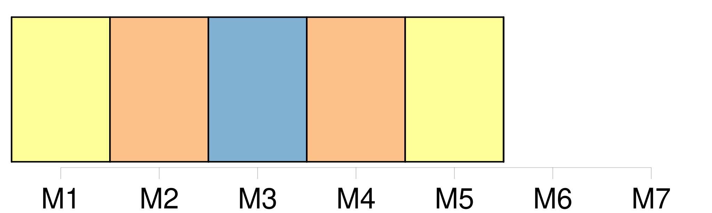

Longueur nb maillons : 5 mentions |
 |
Dans les cas où deux membres ou plus de la Commission conviennent que [le différend] [qui] les oppose est d'ordre technique et qu'ils ne sont pas en mesure de régler [ce différend] eux -mêmes, ils peuvent [le] soumettre, par consentement mutuel, à un panel ad hoc d'experts à caractère non contraignant constitué dans le cadre de la Commission, conformément aux procédures adoptées à cette fin par la Commission.
Ce panel procède à des échanges de vues avec les membres concernés et s'efforce de régler [le différend] dans les meilleurs délais, sans recourir aux procédures obligatoires de règlement des différends. |
|
Il est possible de télécharger la ressource sur la page Ortolang |
Si vous avez des questions ou vous voyez des erreurs, merci d'envoyer un mail à silvia.federzoni89@gmail.com |